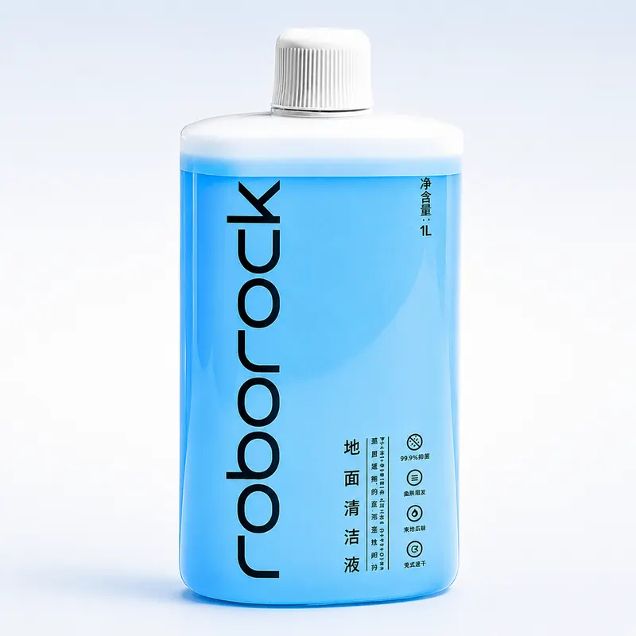

로보락 (Roborock)
로보락 정품 세제 1L, 1병과 2병 복수구매할인 중 무엇을 고를까요?
글·구성: 제이상점 · 기종별 소모품 규격·호환·유지비 요약본 (실물 구성 예시 사진과 상세 후기는 아래 네이버 블로그 모바일 원문에서 보실 수 있습니다.)

핵심 관리 · 선택 체크포인트
- 브러시와 물걸레 여분은 아직 충분한데 세제만 먼저 떨어졌다면, 전체 소모품 세트 대신 세제 단품을 보충할 차례입니다.
- 1L 1병 vs 2병 옵션과 보충 전 확인 사항: 로보락 전용 클리너 단품은 S10·S9·S8 시리즈 등 물걸레 세척·청소 기능을 쓰는 가정에서 소모품 세트와 별도로 준비하기 좋은 구성입니다.
- 투입 전 기종 설명서와 병 라벨을 대조합니다: 도크에 별도 세제 카트리지가 있는 모델인지, 깨끗한 물통에 라벨 안내에 맞춰 넣는 모델인지 먼저 구분해야 합니다.
- 제이상점 상품은 중국 구매대행·해외직배송으로 진행되므로 기존 세제가 바닥나기 전에 잔량을 미리 살펴보는 것이 좋습니다.
부품 규격 · 점검 기준표
| 선택 옵션 | 구성 특징 | 보충·보관 시 확인할 점 |
|---|---|---|
| 용량 1L-1병 | 1L 단품 1병 기본 구성 | 현재 기종의 투입 방식(자동 세제통 또는 물통)과 라벨 안내 확인 |
| 용량 1L-2병(복수구매할인) | 1L 2병 묶음 할인 적용 | 개봉일과 리필 시점을 병 라벨에 메모하고 직사광선을 피해 보관 |
자주 묻는 질문 (FAQ)
Q. 로보락S10MaxVUltra의 용량 1L-1병 규격과 관리 기준은 무엇인가요?
A. 1L 단품 1병 기본 구성 규격을 사용하며, 현재 기종의 투입 방식(자동 세제통 또는 물통)과 라벨 안내 확인 기준으로 점검·교체하면 청소 효율을 안정적으로 유지할 수 있습니다.
Q. 로보락S10MaxVUltra의 용량 1L-2병(복수구매할인) 규격과 관리 기준은 무엇인가요?
A. 1L 2병 묶음 할인 적용 규격을 사용하며, 개봉일과 리필 시점을 병 라벨에 메모하고 직사광선을 피해 보관 기준으로 점검·교체하면 청소 효율을 안정적으로 유지할 수 있습니다.
💡 제이상점 1:1 전용 규격 검수 & 실속 구매 포인트
검수 상품: [정품] 로보락 세제 전용 세정제 세정액 클리너 소모품 S10 S9 S8
선택 가능 옵션: 용량 1L-1병 · 용량 1L-2병(복수구매할인)
☑️ 단품 반복 배송비 대신 기간별 패키지로 1년 유지비 절감 · 물세척 부품 24시간 교대 건조 여분 확보 · 중국 구매대행·해외직배송(개인통관고유부호 확인)